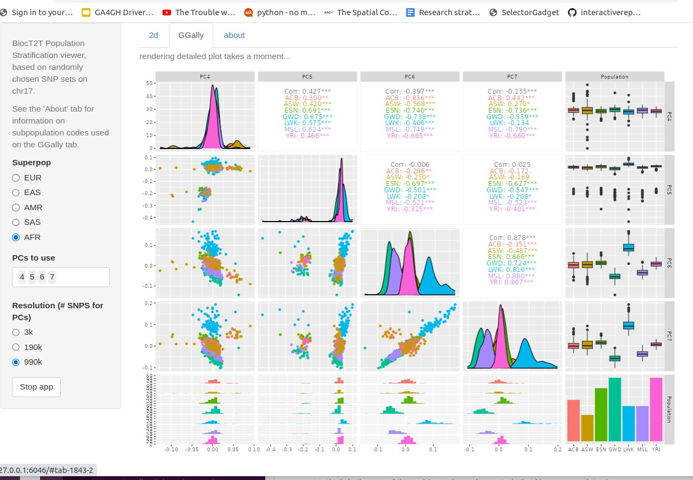

Purpose
Provide general access to use cases for a transition to cloud computing for a research lab focused on lung disease genetics and personalized genomic medicine
See the “Get started” and “Articles” tabs above for details. As a taster, we have
Carey group
BiocHail
We have an R package in Bioconductor that runs through the following topics (this is just a screenshot, visit BiocHail at Bioconductor for the real thing in at Bioconductor for details):

BiocT2T
We want to accelerate adoption of the new telomere-to-telomere genome reference. To get the flavor we have an app that looks like:

Full details at VJC’s pkgdown site